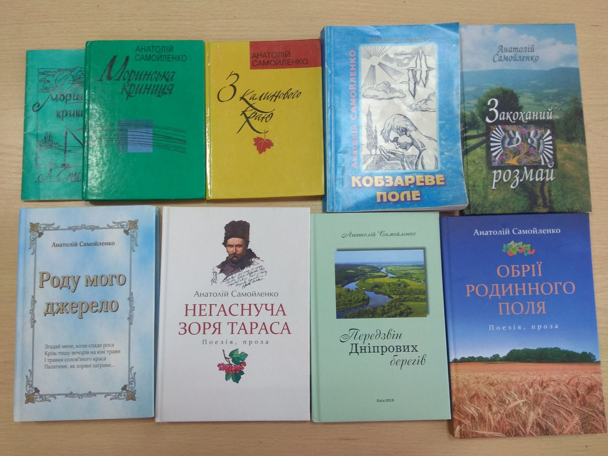

БІБЛІОГРАФІЯ
Самойленко А. П. Моринська криниця. Поезії. — Біла Церква: Видавництво «Буква» Київського обласного творчого об'єднання «Культура», 1993. — 38 с.
Самойленко А. П. Моринська криниця: Лірика, поеми, гумор. — К. : Рада, 1998. — 128 с.
Самойленко А. П. З калинового краю: Поезія, проза. — К.: Рада, 2000. — 112 с.
Самойленко А. Кобзареве поле. — К.: Видавництво «Бібліотека українця», 2003. — 256 с.
Самойленко А. Закоханий розмай: Лірика. Поеми. Пісні. — К.: Рада, 2006. — 112 с.
Самойленко А. Роду мого джерело: Вірші, поеми, гуморески та пісні.— К. : Рада, 2008.— 360 с.
Самойленко А. Негаснуча зоря Тараса: поезія, проза /А. П. Самойленко .— К.: Майстер книг, 2014. — 304 с.
Самойленко А. Обрії родинного поля : поезія, проза. — К.: Майстер книг. — 2016. —222 с.
Самойленко А. П. Передзвін Дніпрових берегів. — К.: Черкаське земляцтво «Шевченків край» у м. Києві, 2018. — 216 с.